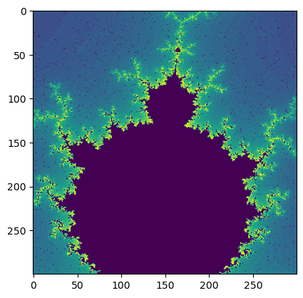

p-life notebook#
trying both html and pygame py !!#
# see https://www.youtube.com/watch?v=0Kx4Y9TVMGg
# and also
import os
os.listdir(os.getcwd())
['plife.md',
'mandelbrot_copy.html',
'MacB9j-plife.ipynb',
'JB_logo.png',
'plife_html_etc',
'test-Gif-ok2.gif',
'mand_html_etc',
'.DS_Store',
'media copy',
'requirements.txt',
'imgnobk9References.bib',
'MacB9i-matlib-sample-animations.ipynb',
'particle_life_copy.html',
'lines_4.mp4',
'MacB9c-test3.ipynb',
'teset_7_particle_box.mp4',
'MacB9e-test-Gif-ok.ipynb',
'introAnimate.md',
'MacB9-Animate.ipynb',
'nongui_backend.png',
'test-Gif-ok3U2Alex.gif',
'img',
'MacB9d-test-iter.ipynb',
'_toc.yml',
'im_4.mp4',
'Less.png',
'_build',
'_config.yml',
'iter-ok1.gif',
'.ipynb_checkpoints',
'MacB9e-test-Gif-ok-CopyForAlex.ipynb',
'MacB9f-test-Juno-2.ipynb',
'Mlp3-cook1.ipynb',
'main',
'MacB9h-DB7-sync.ipynb',
'myAnimation.gif',
'particle_life_3d_copy.html',
'MacB9b-TestPhyMSUanimate.ipynb']
import pygame
# try to handle font issue on mac vs pc
print(pygame.font.get_fonts())
# returns a list of available fonts
pygame.font.get_default_font()
# returnes the name of the default font
if 'arialunicode' in pygame.font.get_fonts():
font_name = 'arialunicode'
else:
font_name = pygame.font.get_default_font()
---------------------------------------------------------------------------
ModuleNotFoundError Traceback (most recent call last)
Cell In[2], line 1
----> 1 import pygame
2 # try to handle font issue on mac vs pc
3 print(pygame.font.get_fonts())
ModuleNotFoundError: No module named 'pygame'
in markdown one can try this:#

not working#
` 2 be updated none work so far
`
! work perhaps#
html work perhaps#
import plife_html_etc.particle_life
# not working well even undo the System Fonts part
## A simple Python port - You need: pip install pygame. Note the code here is not efficient but it's made to be educational and easy
import pygame
import random
# import pygame
# pygame.init()
# screen = pygame.display.set_mode((800, 600))
# background = pygame.Surface(screen.get_size())
# background.fill((255, 255, 255))
# rect = pygame.Rect(0, 0, 20, 20)
# running = True
# rwhile running:
# r for event in pygame.event.get():
# r if event.type == pygame.QUIT:
# r running = False
# r rect.x += 1
# r if rect.x > 780:
# r rect.x = 0
# r screen.blit(background, (0, 0))
# r pygame.draw.rect(screen, (0, 0, 0), rect)
# r pygame.display.update()
atoms=[]
window_size = 300
pygame.init()
window = pygame.display.set_mode((window_size, window_size))
screen = window
def draw(surface, x, y, color, size):
for i in range(0, size):
pygame.draw.line(surface, color, (x, y-1), (x, y+2), abs(size))
def atom(x, y, c):
return {"x": x, "y": y, "vx": 0, "vy": 0, "color": c}
def randomxy():
return round(random.random()*window_size + 1)
def create(number, color):
group = []
for i in range(number):
group.append(atom(randomxy(), randomxy(), color))
atoms.append((group[i]))
return group
def rule(atoms1, atoms2, g):
for i in range(len(atoms1)):
fx = 0
fy = 0
for j in range(len(atoms2)):
a = atoms1[i]
b = atoms2[j]
dx = a["x"] - b["x"]
dy = a["y"] - b["y"]
d = (dx*dx + dy*dy)**0.5
if( d > 0 and d < 80):
F = g/d
fx += F*dx
fy += F*dy
a["vx"] = (a["vx"] + fx)*0.5
a["vy"] = (a["vy"] + fy)*0.5
a["x"] += a["vx"]
a["y"] += a["vy"]
if(a["x"] <= 0 or a["x"] >= window_size):
a["vx"] *=-1
if(a["y"] <= 0 or a["y"] >= window_size):
a["vy"] *=-1
yellow = create(100, "yellow")
red = create(100, "red")
# try to exit gracefully using clock
# try to handle font issue on mac vs pc
# pygame.font.get_fonts()
# returns a list of available fonts
# pygame.font.get_default_font()
# returnes the name of the default font
#if 'Calibri' in pygame.font.get_fonts():
# font_name = 'Calibri'
#else:
# font_name = pygame.font.get_default_font()
#if 'Calibri' in pygame.font.get_fonts():
# font_name = 'arialunicode'
#else:
# font_name = pygame.font.get_default_font()
#font = pygame.font.SysFont(font_name , 18)
clock = pygame.time.Clock()
time = clock.get_time()
#font = pygame.font.SysFont('Arial', 18)
#font = pygame.font.SysFont('', 18)
#text = font.render('Time taken: {} ms'.format(time), True, (0, 0, 0))
#screen.blit(text, (0, 0))
# clock.tick(30)
#fps = clock.get_fps()
#clock.tick_busy_loop(30)
#time_elapsed = pygame.time.get_ticks()
#font = pygame.font.SysFont('Arial', 18)
#font = pygame.font.SysFont('', 18)
#text = font.render('Time Elapsed: {} ms'.format(time_elapsed), True, (0, 0, 0))
#screen.blit(text, (0, 40))
#font = pygame.font.SysFont('Arial', 18)
#font = pygame.font.SysFont('', 18)
#text = font.render('FPS: {}'.format(fps), True, (0, 0, 0))
#screen.blit(text, (0, 20))
# pygame.time.wait(1000)
# pygame.time.delay(1000)
# see also https://www.geeksforgeeks.org/how-to-add-custom-events-in-pygame/
CUSTOM_EVENT = pygame.USEREVENT + 1 # see the above custom event link
# Using pygame.event.post() method.
# Step 1 – Convert event into event datatype of pygame
# ADD_event = pygame.event.Event(event)
# Step 2 – Post the event
# pygame.event.post(ADD_event) # event_name as parameter
# Using pygame.time.set_timer() method.
# event_name, time in ms
# pygame.time.set_timer(event, duration)
# Note: In this, we don’t need to convert the user-defined event into PyGame event datatype.
pygame.time.set_timer(CUSTOM_EVENT, 3000) # 1000
run = True
while run:
window.fill(0)
rule(red, red, 0.1)
rule(red, yellow, -0.15)
rule(yellow, yellow, -0.1)
for i in range(len(atoms)):
draw(window, atoms[i]["x"], atoms[i]["y"], atoms[i]["color"], 3)
for event in pygame.event.get():
if event.type == pygame.QUIT:
run = False
if event.type == CUSTOM_EVENT:
run = False
pygame.display.flip()
pygame.quit()
print("pygame exit perhaps normally ?!!!")
# https://www.makeuseof.com/pygame-games-control-time-how-to/
# exit() # exit like this would not work
pygame exit perhaps normally ?!!!
not working#
` 2 be updated none work so far
`
! work perhaps#
html work perhaps#
subdir-mand
subdir-mand dot-slash
curdir-mand dot-slash
curdir-mand dot-slash
# from https://www.youtube.com/watch?v=mzizK6ms-gY
import mand_html_etc.mandelbrot

import matplotlib.pylab as plt
window_size = 300
center = window_size/2
atoms=[]
mat = []
for y in range(window_size):
mat.append([])
for x in range(window_size):
mat[y].append(0)
dx = (x-center)/1000-0.12
dy = (y-center)/1000-0.82
a = dx
b = dy
for t in range(50):
d = (a*a)-(b*b)+dx
b = 2*(a*b)+dy
a = d
H = d > 200
if(H==True):
mat[y][x] = t
plt.imshow(mat)
plt.show()
### another version with numpy (still not fast!)
import numpy as np
import matplotlib.pylab as plt
atoms=[]
window_size = 300
center = window_size/2
mat = np.zeros((window_size, window_size))
for y in range(window_size):
for x in range(window_size):
dx = (x-center)/1000-0.12
dy = (y-center)/1000-0.82
a = dx
b = dy
for t in range(50):
d = (a*a)-(b*b)+dx
b = 2*(a*b)+dy
a = d
H = d > 200
if(H==True):
mat[y, x] = t
plt.imshow(mat)
plt.show()
import os
x=os.getcwd()
os.listdir(os.getcwd())
print(f"{os.getcwd()=}")
print(f"{x=}")
print(f"{os.listdir(x)=}")
os.getcwd()='C:\\Users\\ngcchk\\Documents\\GitHub\\gpd2-win-unity1\\ipadred-rain\\imgno_book1\\imgnobk9'
x='C:\\Users\\ngcchk\\Documents\\GitHub\\gpd2-win-unity1\\ipadred-rain\\imgno_book1\\imgnobk9'
os.listdir(x)=['.ipynb_checkpoints', 'img', 'imgnobk9References.bib', 'im_4.mp4', 'introAnimate.md', 'iter-ok1.gif', 'JB_logo.png', 'Less.png', 'lines_4.mp4', 'MacB9-Animate.ipynb', 'MacB9b-TestPhyMSUanimate.ipynb', 'MacB9c-test3.ipynb', 'MacB9d-test-iter.ipynb', 'MacB9e-test-Gif-ok-CopyForAlex.ipynb', 'MacB9e-test-Gif-ok.ipynb', 'MacB9f-test-Juno-2.ipynb', 'MacB9h-DB7-sync.ipynb', 'MacB9i-matlib-sample-animations.ipynb', 'MacB9j-plife.ipynb', 'main', 'mandelbrot_copy.html', 'mand_html_etc', 'media copy', 'Mlp3-cook1.ipynb', 'myAnimation.gif', 'nongui_backend.png', 'particle_life_3d_copy.html', 'particle_life_copy.html', 'plife.md', 'plife_html_etc', 'requirements.txt', 'teset_7_particle_box.mp4', 'test-Gif-ok2.gif', 'test-Gif-ok3U2Alex.gif', '_build', '_config.yml', '_toc.yml']
import platform
print(f"{platform.system()=}")
print(f"{platform.release()=}")
print(f"{platform.version()=}")
# ipad
'''
platform.system()='Darwin'
platform.release()='22.6.0'
platform.version()='Darwin Kernel Version 22.6.0: Wed Jun 28 20:51:42 PDT 2023; root:xnu-8796.142.1~1/RELEASE_ARM64_T8020'
'''
platform.system()='Windows'
platform.release()='10'
platform.version()='10.0.22621'
"\nplatform.system()='Darwin'\nplatform.release()='22.6.0'\nplatform.version()='Darwin Kernel Version 22.6.0: Wed Jun 28 20:51:42 PDT 2023; root:xnu-8796.142.1~1/RELEASE_ARM64_T8020'\n"